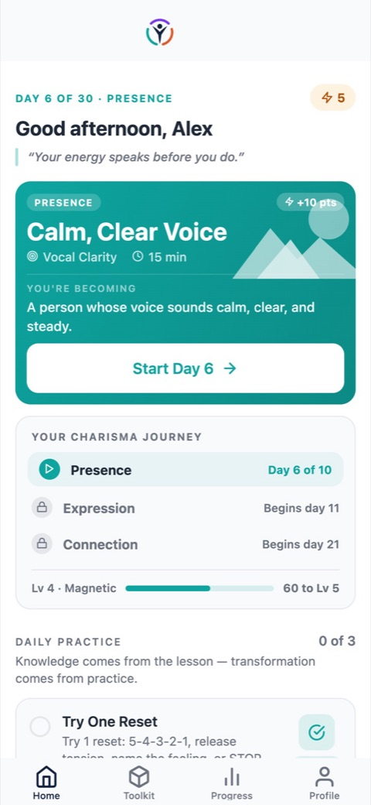

Charisma30Small practice.
Real presence.One day at a time.
Real presence.One day at a time.

Charisma30
PERSONAL GROWTHA 30-day journey to practise calm presence, clear expression and real connection. One lesson and one small practice a day.
Explore the project